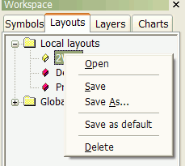

Layouts context menu

The Layouts context menu shows up when you click with the right mouse button over
a layout in the Workspace window, on the Layouts tab.
Available choices:
- Open - loads the selected layout
- Save - saves the current window layout under its current name
- Save As... - saves the current window layout under a new name
- Save as default - saves the current window layout as the default (startup) layout
for the given database
- Delete - deletes the selected layout
To learn more about Layouts, please check Tutorial: Chart sheets and layouts